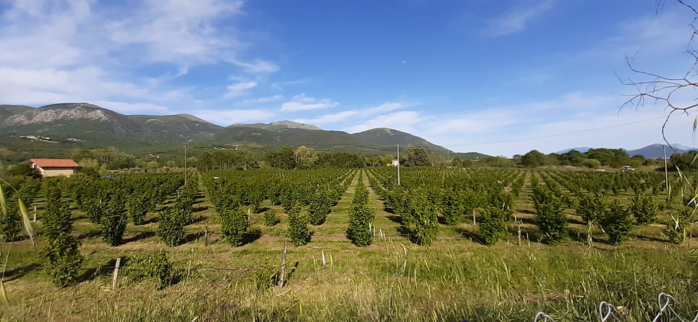

Chi siamo
L'impresa agricola Scelzo ha visto la luce nella primavera del 2016, intraprendendo un avventuroso percorso nel suggestivo mondo agricolo, dominato da una forza quasi inafferrabile e da molteplici sfide. Affascinati dalla perfezione della natura, dall'incanto dei profumi e rapiti da una realtà immersa nell'illusione di chi non osa osare, abbiamo trasformato il nostro sogno in una concretezza. Passione, coraggio, impegno e costanza costituiscono le fondamenta del nostro operare, un'attività laboriosa, ardua e complessa che ci ha permesso di investire con amore nel nostro territorio. Un'impresa che ha coinvolto l'intera famiglia con entusiasmo, vivacità e vigore, dando vita a una nuova realtà pronta ad affrontare il futuro. La forza della nostra azienda è ancorata ai valori, al coraggio e alla fiducia, nonché al rispetto per la terra e l'ambiente, con un impegno concreto nella coltivazione secondo i principi dell'agricoltura biologica. Situati a Marsico Nuovo, comune della provincia di Potenza, ci distinguiamo principalmente per la coltivazione corilicola su una superficie di circa 5 ettari, ma stiamo espandendo le nostre attività con nuove coltivazioni. La nostra è una visione aziendale chiara, e ci proponiamo come azienda lucana del futuro. Siamo pronti a valorizzare un territorio che per troppi anni è stato trascurato, determinati a cogliere l'essenza della vita contadina e a rigenerare una terra che da sempre ci ha elargito la sua benevolenza e supporto, rappresentando la nostra autentica ricchezza. Ci prepariamo a metterci all'opera per abbracciare la fatica, immergendo le mani nella terra coltivata, percependo e apprezzando i suoi frutti nel rispetto dei ritmi biologici. La nostra determinazione è volta alla creazione di prodotti totalmente italiani, poiché crediamo fermamente che vivendo in armonia con la natura, questa risponderà con altrettanta generosità a nostro favore.
